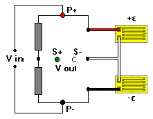

2-Arm (Bending/Shear) Bridge
2-Arm (Bending/Shear) Bridge2-Arm (Bending/Shear) Bridge
Associated Application
General Considerations
Low cost, half-bridge circuit. Like the (1+v) arrangement, it has two active gages, but the output is higher and varies linearly with strain.
When this configuration is used in bending beam transducers, gages are installed on both the tension and compression sides of the beam to measure the axial strains. While this configuration does have the advantage of cancelling axial loads, it is slightly more complicated to install than the (1+v) configuration.

While this configuration can be used on transducers with shear webs, full-bridge circuits are preferred for their higher output and bending cancellation.
Inputs (Limits)
 Strain (-5000 to +5000 microstrain)
Strain (-5000 to +5000 microstrain)
Gage Factor (1.0 to 5.0)
Calculations
 Output (mV/V)
Output (mV/V)